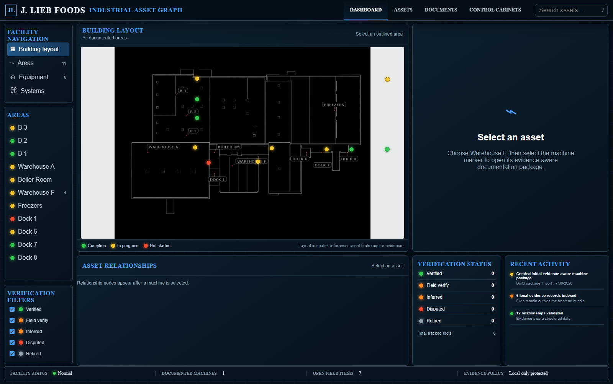

Observe the real machine and its environment.
J. LIEB FOODS · FACILITY KNOWLEDGE · LIVE SYSTEM
INDUSTRIALASSET GRAPH
$ mission
Capture decades of facility knowledge before it disappears.
● system ready
Make the facility’s knowledge belong to the facility.
A living map of equipment, evidence, documentation, and the relationships between them.
BEGIN THE STORY01 / THE PROBLEM
0YEARS IN THE
ELECTRICAL TRADE
ELECTRICAL TRADE
0YEARS AT
THIS FACILITY
THIS FACILITY
BUILT • WIRED • MODIFIED • REPAIRED • TROUBLESHOT
WHEN HE LEAVES,
UNDOCUMENTED KNOWLEDGE LEAVES WITH HIM.
THE KNOWLEDGE AT RISK
NOT A LIST
OF MACHINES.
POWER SOURCESCONTROL LOGICDEVICE LOCATIONSHISTORICAL MODIFICATIONSTROUBLESHOOTING TECHNIQUESEQUIPMENT QUIRKSSAFETY INTERLOCKSUPSTREAM / DOWNSTREAM RELATIONSHIPS
The value lives in how everything connects.
02 / THE WORKING SYSTEM
The facility becomes the interface.

AREA STATUS
MACHINE RECORD
VERIFICATION
BUILDING LAYOUTASSETSDOCUMENTSCONTROL CABINETSRELATIONSHIPS
THE PROJECT EVIDENCE LIBRARY
The physical facility
is already becoming data.
Cabinet interiors. Device layouts. Schematics. Service distribution. Building plans. Annotated field views.
10 RECOVERED VISUALS06 TECHNICAL DRAWINGS02 FIELD VIEWS
03 / KNOWLEDGE CAPTURE
The graph starts in the field.
Photograph cabinets, tags, nameplates, and notes.
Record the expert’s history, logic, and troubleshooting knowledge.
Separate observed facts from items that still need proof.
Place the evidence into the facility knowledge graph.
VERIFIED FIELD VERIFY INFERRED DISPUTED
04 / THE GRAPH
Start anywhere.
Follow the system.
UPSTREAM SUPPLYCONTROL PATHPHYSICAL OUTCOME
A future technician can trace the system without relying on one person’s memory.
05 / OPERATIONAL VALUE
Knowledge that stays
keeps the facility moving.
Faster troubleshooting
Trace likely dependencies before opening a cabinet.
Safer planning
Bring source-backed context into maintenance decisions.
Faster onboarding
Give the next technician a navigable facility map.
Less rediscovery
Preserve fixes, modifications, and hard-won field knowledge.
THE TRANSFORMATION
“The electrician knows how this works.”
↓
“THE FACILITY KNOWS
HOW THIS WORKS.”
PEOPLE RETIRE. EQUIPMENT CHANGES. KNOWLEDGE SHOULD REMAIN.